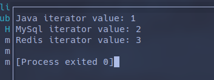
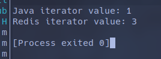

HashMap 的遍历方法¶
HashMap 的遍历方法有多种，不同的 JDK 版本也会提供不同的写法
Java8 之前的遍历¶
Java8 之前主要使用 EntrySet 和 KeySet 进行遍历：
EntrySet¶
// EntrySet遍历
public class HashInterator {
public static void main(String[] args) {
HashMap<String, String> map = new HashMap<>();
map.put("Java", "1");
map.put("MySql", "2");
map.put("Redis", "3");
for (Map.Entry<String, String> entry : map.entrySet()) {
System.out.println(entry.getKey() + "," + entry.getValue());
}
}
}
KeySet¶
KeySet 用以遍历 Key 内容，此时通过 map.get(key) 来获取 Value 值。
相较 EntrySet，KeySet 的性能由于其本质是遍历两次 map 而更低
public class HashInterator {
public static void main(String[] args) {
HashMap<String, String> map = new HashMap<>();
map.put("Java", "1");
map.put("MySql", "2");
map.put("Redis", "3");
for (String key : map.keySet()) {
System.out.println(key + ", value: " + map.get(key));
}
}
}
KeySet 迭代器¶
还有一种方式是获取 KeySet 的迭代器用以遍历：
Iterator<String> iterator = map.keySet().iterator();
while(iterator.hasNext()) {
String key = iterator.next();
System.out.println(key + " iterator value: " + map.get(key));
}

迭代器的作用是用来动态操作当前 map（如增加或删除），java 禁止非迭代器的遍历修改操作
for (Map.Entry<String, String> entry : map.entrySet()) {
if ("MySql".equals(entry.getKey())) {
map.remove(entry.getKey());
continue;
}
System.out.println(entry.getKey() + "," + entry.getValue());
}
可以看出，当使用 Collections 自己的删除操作时会抛出 ConcurrentModificationException，
这是因为 foreach 语句本质上是调用 Collections 的 Iterator，使用 Iterator 的 next() 进行迭代，
以下为 Collections 的源码：
final class EntryIterator extends HashMap<K, V>.HashIterator implements Iterator<Map.Entry<K, V>> {
EntryIterator(HashMap this$0) {
super();
}
public final Map.Entry<K, V> next() {
return this.nextNode();
}
}
final class ValueIterator extends HashMap<K, V>.HashIterator implements Iterator<V> {
ValueIterator(HashMap this$0) {
super();
}
public final V next() {
return this.nextNode().value;
}
}
final class KeyIterator extends HashMap<K, V>.HashIterator implements Iterator<K> {
KeyIterator(HashMap this$0) {
super();
}
public final K next() {
return this.nextNode().key;
}
}
此时再看 nextNode() 的代码：
final Node<K, V> nextNode() {
Node<K, V> e = this.next;
if (HashMap.this.modCount != this.expectedModCount) {
throw new ConcurrentModificationException();
} else if (e == null) {
throw new NoSuchElementException();
} else {
Node[] t;
if ((this.next = (this.current = e).next) == null && (t = HashMap.this.table) != null) {
while(this.index < t.length && (this.next = t[this.index++]) == null) {
}
}
return e;
}
}
可以发现，Iterator 的 nextNode() 方法是会对 expectedModCount 和 modCount 进行比对的，
这相当于是一个版本号机制，Iterator 在被初始化时会将其 expectedModCount 设定为集合的 modCount:
final Node<K, V> nextNode() {
Node<K, V> e = this.next;
if (HashMap.this.modCount != this.expectedModCount) {
throw new ConcurrentModificationException();
} else if (e == null) {
throw new NoSuchElementException();
} else {
Node[] t;
if ((this.next = (this.current = e).next) == null && (t = HashMap.this.table) != null) {
while(this.index < t.length && (this.next = t[this.index++]) == null) {
}
}
return e;
}
}
而 集合 的增删改操作则会修改 集合 的modCount，
因此使用集合的增删改操作会导致 Iterator 记录的 “版本号” 与集合的不一致，
从而抛出 ConcurrentModificationException:
public boolean remove(Object key, Object value) {
return this.removeNode(hash(key), key, value, true, true) != null;
}
final Node<K, V> removeNode(int hash, Object key, Object value, boolean matchValue, boolean movable) {
// 其他代码
++this.modCount;
--this.size;
this.afterNodeRemoval((Node)node);
return (Node)node;
}
}
return null;
}
综上，若要动态地对 map 边遍历边修改，应使用 Iterator.remove()， 这时每次修改都会在最后更新 Iterator 的 expectedModCount:
public final void remove() {
Node<K, V> p = this.current;
if (p == null) {
throw new IllegalStateException();
} else if (HashMap.this.modCount != this.expectedModCount) {
throw new ConcurrentModificationException();
} else {
this.current = null;
HashMap.this.removeNode(p.hash, p.key, (Object)null, false, false);
this.expectedModCount = HashMap.this.modCount;
}
}
此时，遍历代码为：
Iterator<Map.Entry<String, String>> iterator = map.entrySet().iterator();
while(iterator.hasNext()) {
Map.Entry<String, String> entry = iterator.next();
if ("MySql".equals(entry.getKey())) {
iterator.remove();
continue;
}
System.out.println(entry.getKey() + " iterator value: " + entry.getValue());
}

Java8 之后的遍历¶
lambda 表达式¶
最常用的一种遍历，注意这种方式也不能动态修改 map
map.forEach((key, value) -> {
System.out.println(key + ":" + value);
});
stream()¶
stream() 的作用是可以对元素视情况进行处理，一般不会用来修改原 map 或说集合， 而只会执行一段非增删改的逻辑，或使用元素内容排出新的集合
单线程¶
map.entrySet().stream().forEach((entry) -> {
System.out.println(entry.getKey() + ": stream value" + entry.getValue());
});
多线程¶
map.entrySet().stream().parallel().forEach((entry) -> {
System.out.println(entry.getKey() + ": stream value" + entry.getValue());
});
排出的范例¶
List<SubjectVO> result = subjectList.stream()
.filter(item -> item.getParentId() == 0L) // 找出根节点
.map(item -> new SubjectVO(item.getId(), item.getTitle(), null)) // 每个 EduSubject 转换为 VO 类
.peek(item -> item.setChildren(getChildrenList(item, subjectList))) // 找出子分类
.collect(Collectors.toList());